A flow with dead ends
A new user signed up and was left without a next step, and some scenarios weren't described. This hurt conversion.
- ✕No Google sign-in
- ✕No path to the mandatory onboarding
- ✕Errors and password recovery not described
No dead ends for any account status

About the project
Fintiba is a financial platform for moving to Germany: a blocked account, insurance and, later on, opening a bank account. I designed a new login and sign-up flow for web and the mobile app.
Team
I led the design of the whole flow, including errors and password recovery. A senior designer and the product owner reviewed the decisions. The project was done before the design system existed, so the screens are in the product's earlier visual style.
Key changes
The main thing: a new user no longer gets stuck after sign-up — the flow takes them straight to the mandatory onboarding. Google sign-in and clear errors remove dead ends on the other steps.
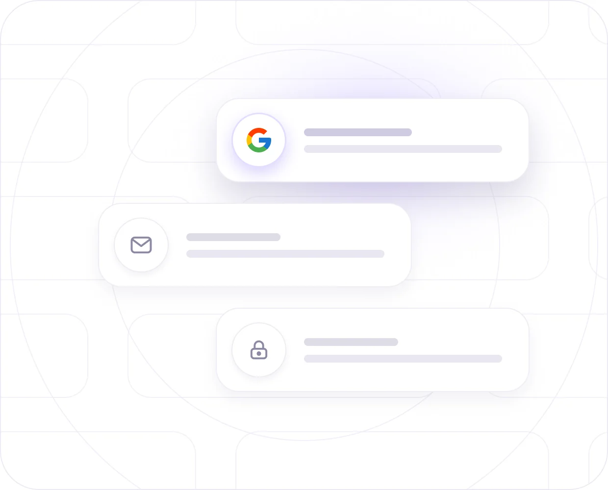

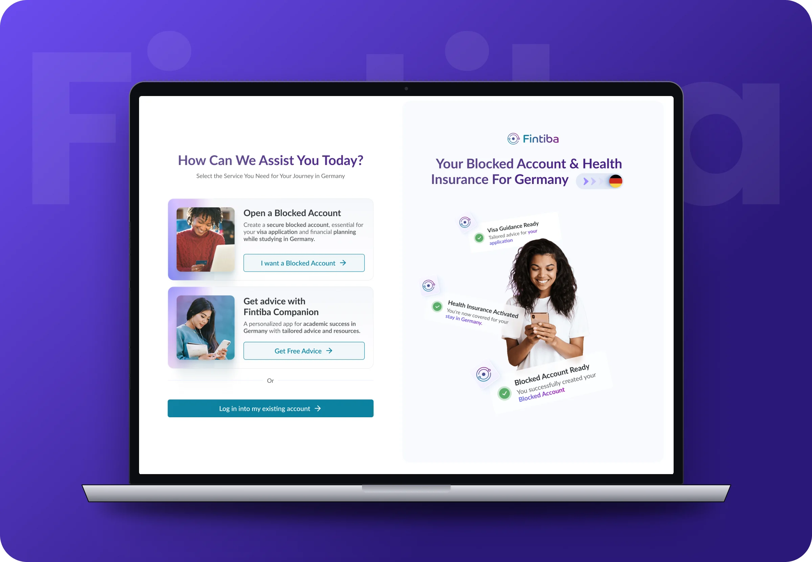
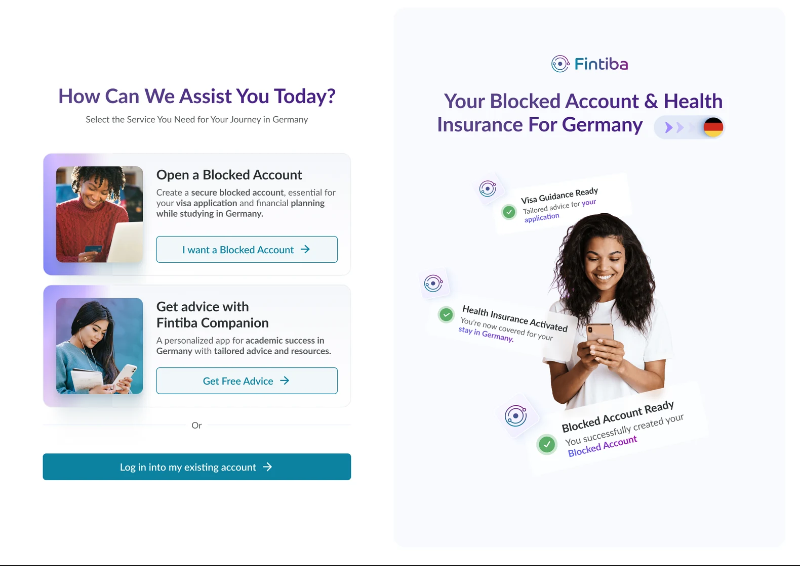
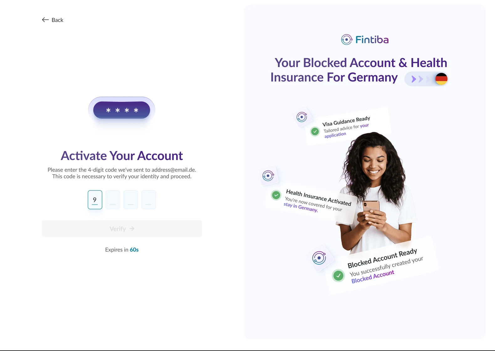
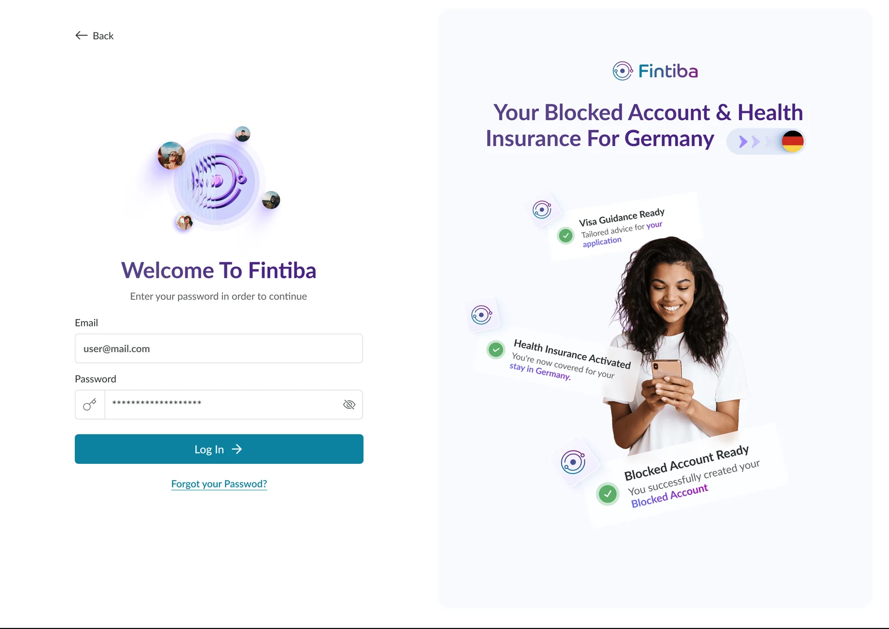
No account: "Email not found" modal → Blocked Account and onboarding See in the flow diagram ↓
A new user signed up and was left without a next step, and some scenarios weren't described. This hurt conversion.
The flow leads down one of three paths depending on account status.
 1
1
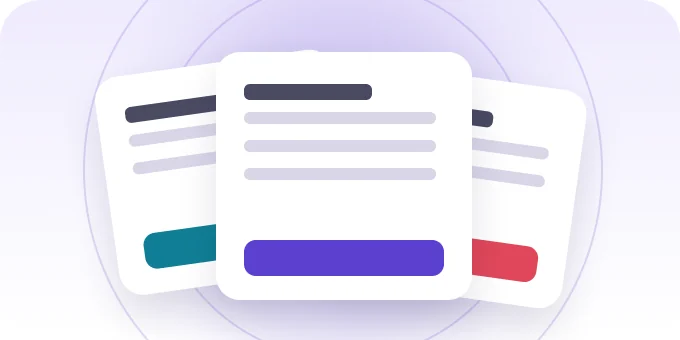
2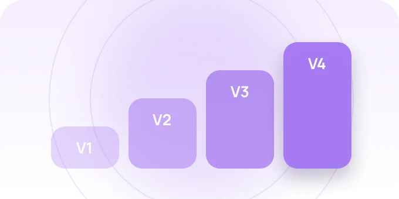
3Swipe cards sideways →
The first screen is choosing a service: Blocked Account, Companion or logging in. After entering an email or signing in with Google, the system checks the account and leads the user down one of three paths. The “Email not found” modal is the key fork: from it a new user goes straight to the mandatory onboarding.
Key decisions
A new user goes straight into the mandatory account-opening flow — before, this was a dead end
We removed the sign-up barrier: one click instead of filling in a form
Errors, password recovery, email not found — every state is written up and documented for development

Every state of the flow is thought through: choosing a service, the main path, code confirmation, errors, password recovery and the “Email not found” modal that leads to onboarding.
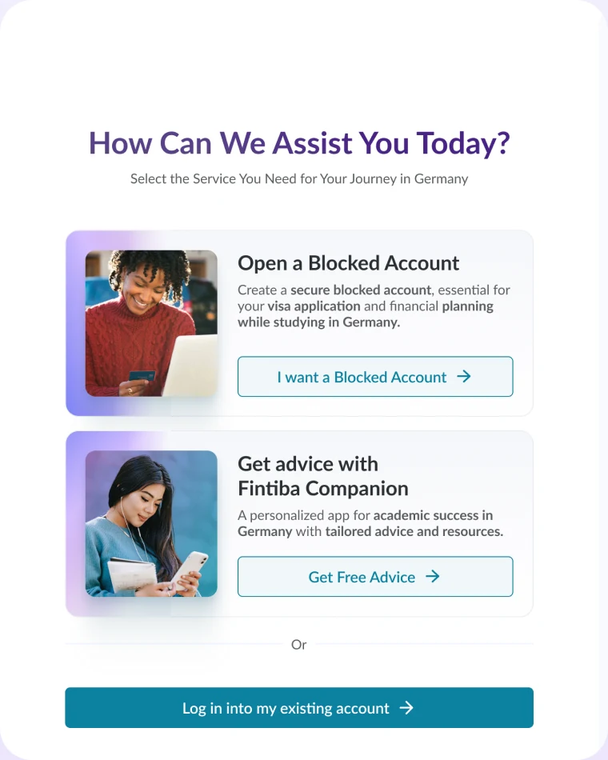
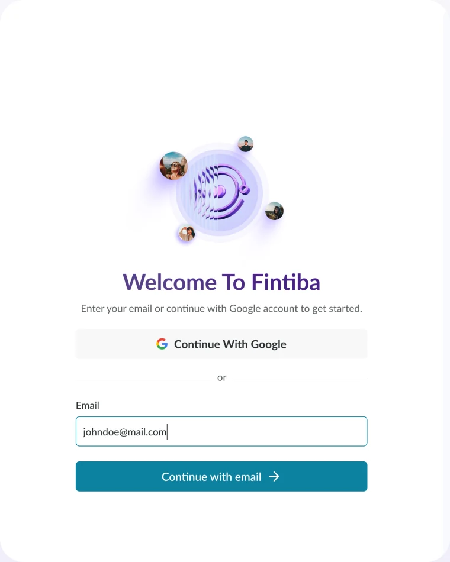
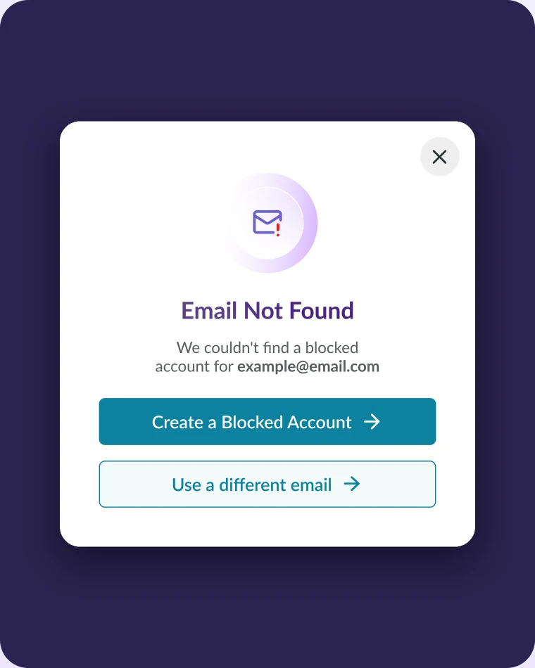
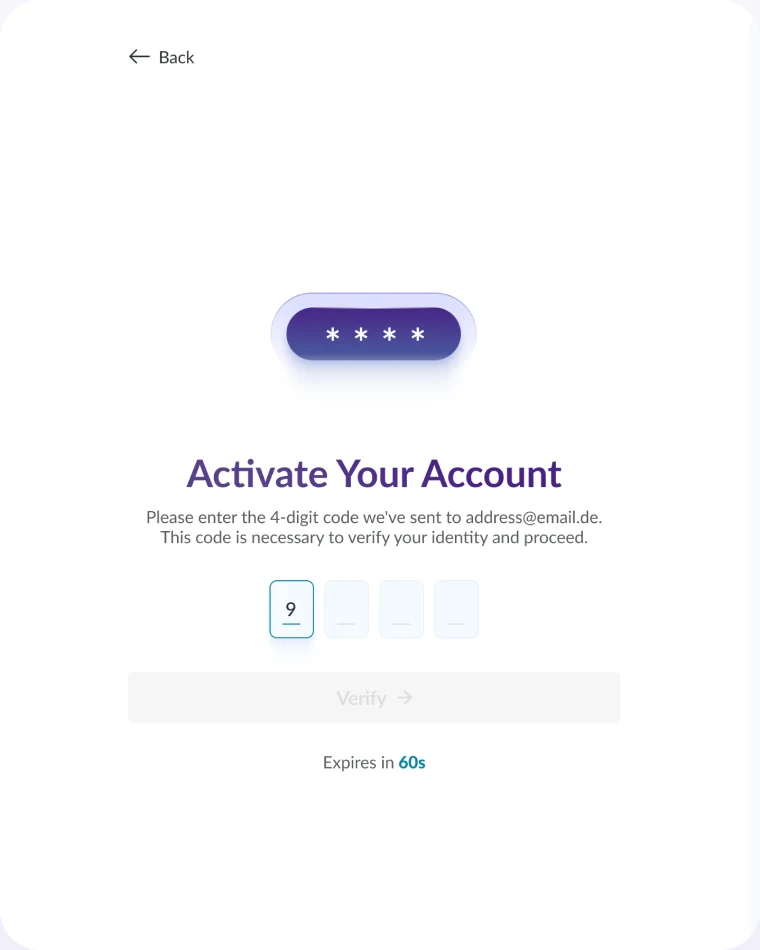
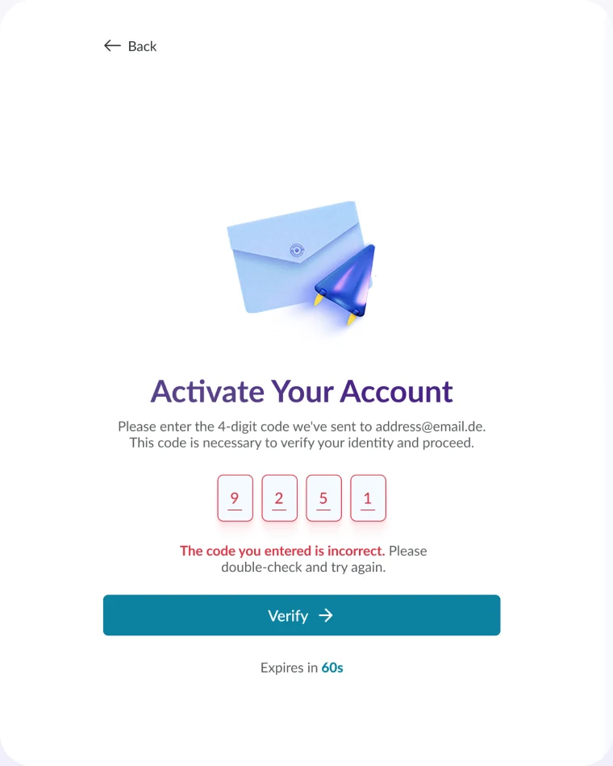

A login that leads on
instead of stopping at an error.
The same scenarios in the native app: choosing a service on the first screen and confirming the account with a code from the email, with resend.

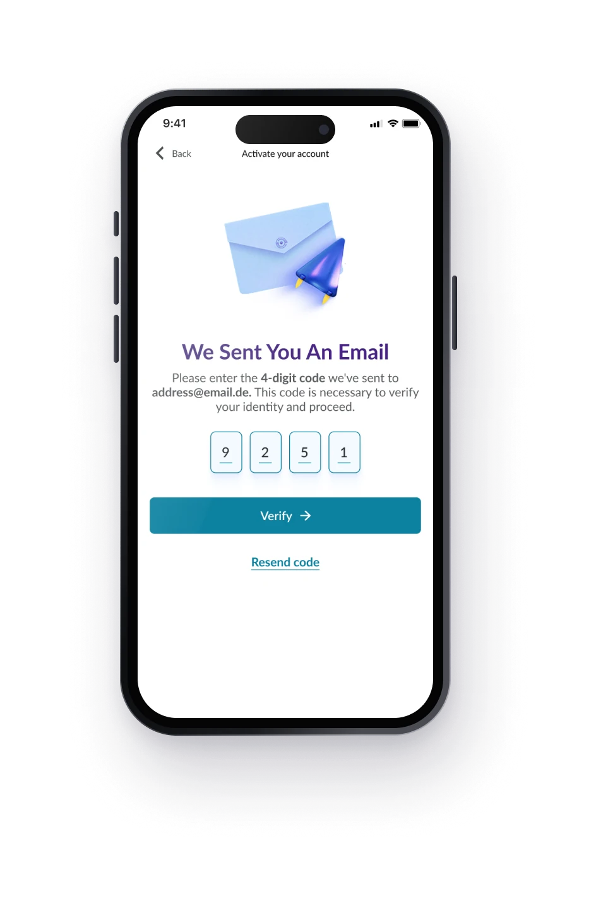
4-digit code Resending the code Choosing a service Logging into an existing accountOne path for each account status.
The same for web and the app, including password recovery. Web also has hover states.
One flow for web and the native app.
V1–V3 in stages, V4 is the full version.
Key takeaway
A new user no longer gets lost after sign-up: every account status has a next step, and every state — from a code error to password recovery — is described for development.